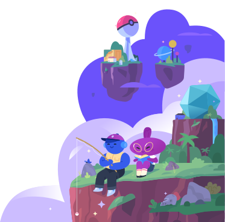
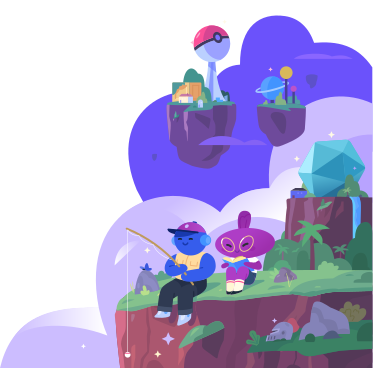

Find your community on discord
From gaming, to music, to learning, there's a place for you.
All25146
Gaming18746
Entertainment10608
Education2091
Science & Tech1965
Music1855
Categories
2091 Results Found


Have a server you want to add to Discovery?
Make Your Community Public
Find a place where you belong
Discord servers are organized into topic-based channels where you can collaborate, share, and just talk about your day without clogging up a group chat.
Join Discord